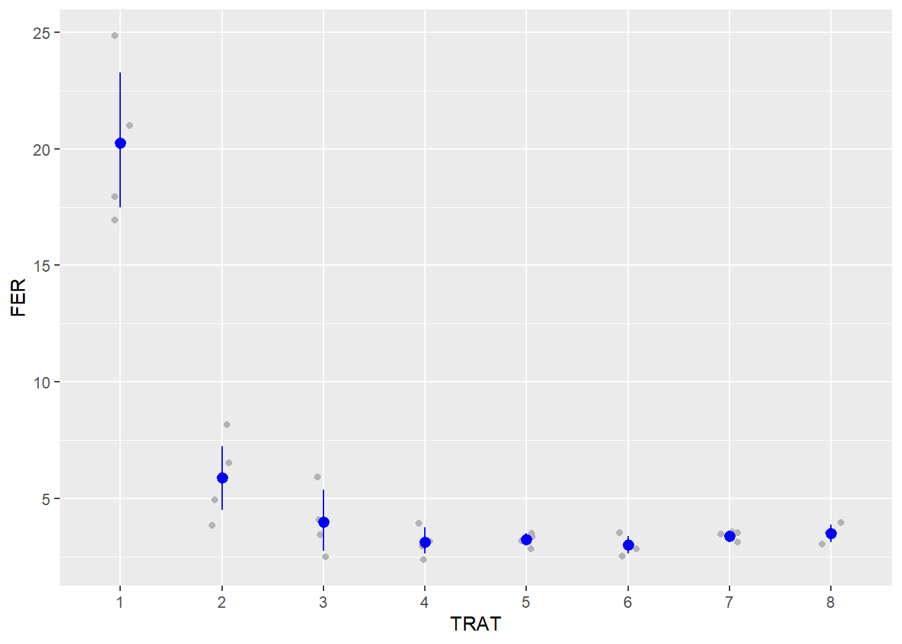

library(tidyverse)
library(gsheet)
soja <- gsheet2tbl("https://docs.google.com/spreadsheets/d/1bq2N19DcZdtax2fQW9OHSGMR0X2__Z9T/edit#gid=866852711")ANOVA em blocos casualizados e parcela subdividida
ANOVA em blocos casualizados
O delineamento em blocos casualizado (DBC) envolve os três princípios da experimentação: repetição, casualização e controle local. Neste caso, as condições locais não são homogêneas e podem ter efeito significativo sobre os tratamentos, sendo necessário o uso de blocos para controlar uma variação conhecida do ambiente.
Assim, a ANOVA contará com três fontes de variação: duas fontes de variação conhecidas (tratamento e bloco), e uma fonte de variação desconhecida (resíduo).
Vale destacar que no DBC não há interesse pela interação do bloco com o tratamento, sendo o bloco apenas para controlar uma possível variação sobre os tratamentos induzida por uma possível variação do ambiente.
Importação dos dados
O conjunto de dados foi importado do Google Sheet através da função gsheet2tbl() do pacote gsheet.
Os dados importados contam com três variáveis respostas: DFC, Ferrugem e Produtividade. Foram experimentados 8 tratamentos, com 4 blocos.
Para cada variável resposta será feito uma ANOVA. Mas primeiro é necessário considerar o número dos tratamentos e os números dos blocos como fatores. Isso pode ser feito usando a função mutate().
soja <- soja |>
mutate(TRAT = as.factor(TRAT),
BLOCO = as.factor(BLOCO))Visualização dos dados
Para cada variável resposta foi criado um gráfico de pontos com a média e o intervalo de confiança de cada tratamento. O gráfico foi feito usando as funções ggplot(), geom_jitter() e stat_summary(), com o argumento fun.data = "mean_cl_boot" (esse argumento cria a bola representando a média e as linhas representando o intervalo de confiança)
Depois, os 3 gráficos foram colocados juntos através do pacote patchwork.
dfc <- soja |>
ggplot(aes(TRAT, DFC))+
geom_jitter(width = 0.1, color = "gray70")+
stat_summary(fun.data = "mean_cl_boot", color = "black")
dfcfer <- soja |>
ggplot(aes(TRAT, FER))+
geom_jitter(width = 0.1, color = "gray70")+
stat_summary(fun.data = "mean_cl_boot", color = "blue")
fer
prod <- soja |>
ggplot(aes(TRAT, PROD))+
geom_jitter(width = 0.1, color = "gray70")+
stat_summary(fun.data = "mean_cl_boot", color = "red")
prodlibrary(patchwork)
dfc / fer / prodANOVA DFC
Como não há interesse da interação entre o bloco e o tratamento, é preciso ajustar o modelo linear de modo que o bloco seja considerado como efeito fixo. Isso pode ser feito usando a função lm() juntamente com a fórmula DFC ~ TRAT+BLOCO (o “+” garante que o BLOCO seja visto como efeito fixo)
aov_dfc <- lm(DFC ~ TRAT+BLOCO,
data = soja)Com o modelo ajustado, é executado a ANOVA usando a função anova().
anova(aov_dfc)Analysis of Variance Table
Response: DFC
Df Sum Sq Mean Sq F value Pr(>F)
TRAT 7 149.299 21.3284 51.5490 8.218e-12 ***
BLOCO 3 0.461 0.1537 0.3716 0.7743
Residuals 21 8.689 0.4138
---
Signif. codes: 0 '***' 0.001 '**' 0.01 '*' 0.05 '.' 0.1 ' ' 1Pelo resultado da ANOVA, pode-se observar que o efeito dos tratamentos na váriavel DFC é significativo, enquanto que o efeito dos blocos não é significativo.
Teste das premissas
As premissas foram checadas através das funções check_heteroscedasticity() e check_normality()
library(performance)
check_heteroscedasticity(aov_dfc)OK: Error variance appears to be homoscedastic (p = 0.532).check_normality(aov_dfc)OK: residuals appear as normally distributed (p = 0.978).Ambas as premissas foram atendidas
Comparação das médias entre os grupos
A comparação das médias entre os grupos foi realizada com as funções emmeans() e cld.
library(emmeans)
medias_dfc <- emmeans(aov_dfc, ~ TRAT)
library(multcomp)
library(multcompView)
cld(medias_dfc, Letters = letters) TRAT emmean SE df lower.CL upper.CL .group
6 4.00 0.322 21 3.33 4.67 a
7 4.08 0.322 21 3.41 4.74 a
5 4.20 0.322 21 3.53 4.87 a
8 4.58 0.322 21 3.91 5.24 ab
4 4.75 0.322 21 4.08 5.42 ab
3 6.05 0.322 21 5.38 6.72 bc
2 6.42 0.322 21 5.76 7.09 c
1 10.88 0.322 21 10.21 11.54 d
Results are averaged over the levels of: BLOCO
Confidence level used: 0.95
P value adjustment: tukey method for comparing a family of 8 estimates
significance level used: alpha = 0.05
NOTE: If two or more means share the same grouping symbol,
then we cannot show them to be different.
But we also did not show them to be the same. Observa-se a formação de 4 grupos estatisticamente distintos.
A eficácia no controle do DFC pode ser calculado através da seguinte fórmula: Eficácia no controle (%) = (1- (emmean do tratamento/emmean da testemunha))*100
ANOVA FER
aov_fer <- lm(FER ~ TRAT+BLOCO,
data = soja)
anova(aov_fer)Analysis of Variance Table
Response: FER
Df Sum Sq Mean Sq F value Pr(>F)
TRAT 7 978.87 139.838 55.1717 4.218e-12 ***
BLOCO 3 3.84 1.279 0.5045 0.6834
Residuals 21 53.23 2.535
---
Signif. codes: 0 '***' 0.001 '**' 0.01 '*' 0.05 '.' 0.1 ' ' 1Teste das premissas
check_heteroscedasticity(aov_fer)Warning: Heteroscedasticity (non-constant error variance) detected (p < .001).check_normality(aov_fer)Warning: Non-normality of residuals detected (p = 0.008).Ambas as premissas não foram atendidas.
Transformação dos dados por Boxcox
b <- boxcox(lm(soja$FER ~ 1))
lambda <- b$x[which.max(b$y)]
lambda[1] -1.555556soja$FER3 <- (soja$FER ^ lambda - 1)/ lambdaNova ANOVA com os dados transformados
aov_fer3 <- lm(FER3 ~ TRAT+BLOCO,
data = soja)
anova(aov_fer3)Analysis of Variance Table
Response: FER3
Df Sum Sq Mean Sq F value Pr(>F)
TRAT 7 0.041641 0.0059488 12.9020 2.436e-06 ***
BLOCO 3 0.005895 0.0019649 4.2616 0.01687 *
Residuals 21 0.009683 0.0004611
---
Signif. codes: 0 '***' 0.001 '**' 0.01 '*' 0.05 '.' 0.1 ' ' 1Com os dados transformados, nota-se que o efeito dos blocos também é significante para variável resposta da ferrugem.
Nova checagem das premissas
check_normality(aov_fer3)OK: residuals appear as normally distributed (p = 0.787).check_heteroscedasticity(aov_fer3)OK: Error variance appears to be homoscedastic (p = 0.872).Comparação das médias entre os grupos
medias_fer2 <- emmeans(aov_fer3, ~ TRAT)
medias_fer2 TRAT emmean SE df lower.CL upper.CL
1 0.637 0.0107 21 0.614 0.659
2 0.596 0.0107 21 0.574 0.618
3 0.553 0.0107 21 0.530 0.575
4 0.527 0.0107 21 0.505 0.550
5 0.539 0.0107 21 0.517 0.561
6 0.523 0.0107 21 0.501 0.545
7 0.545 0.0107 21 0.523 0.567
8 0.549 0.0107 21 0.527 0.572
Results are averaged over the levels of: BLOCO
Confidence level used: 0.95 pwpm(medias_fer2) 1 2 3 4 5 6 7 8
1 [0.637] 0.1857 0.0004 <.0001 <.0001 <.0001 0.0001 0.0002
2 0.04058 [0.596] 0.1358 0.0039 0.0208 0.0020 0.0497 0.0880
3 0.08380 0.04322 [0.553] 0.7032 0.9807 0.5313 0.9995 1.0000
4 0.10920 0.06862 0.02540 [0.527] 0.9938 1.0000 0.9339 0.8261
5 0.09775 0.05717 0.01395 -0.01145 [0.539] 0.9629 0.9999 0.9964
6 0.11349 0.07292 0.02970 0.00429 0.01575 [0.523] 0.8261 0.6703
7 0.09154 0.05097 0.00775 -0.01766 -0.00620 -0.02195 [0.545] 1.0000
8 0.08725 0.04667 0.00345 -0.02195 -0.01050 -0.02624 -0.00429 [0.549]
Row and column labels: TRAT
Upper triangle: P values adjust = "tukey"
Diagonal: [Estimates] (emmean)
Lower triangle: Comparisons (estimate) earlier vs. latercld(medias_fer2, Letters = letters) TRAT emmean SE df lower.CL upper.CL .group
6 0.523 0.0107 21 0.501 0.545 a
4 0.527 0.0107 21 0.505 0.550 a
5 0.539 0.0107 21 0.517 0.561 a
7 0.545 0.0107 21 0.523 0.567 a
8 0.549 0.0107 21 0.527 0.572 ab
3 0.553 0.0107 21 0.530 0.575 ab
2 0.596 0.0107 21 0.574 0.618 bc
1 0.637 0.0107 21 0.614 0.659 c
Results are averaged over the levels of: BLOCO
Confidence level used: 0.95
P value adjustment: tukey method for comparing a family of 8 estimates
significance level used: alpha = 0.05
NOTE: If two or more means share the same grouping symbol,
then we cannot show them to be different.
But we also did not show them to be the same. Observa-se a formação de 3 grupos estatisticamente distintos.
ANOVA PROD
aov_prod <- lm(PROD ~ TRAT+BLOCO,
data = soja)
anova(aov_prod)Analysis of Variance Table
Response: PROD
Df Sum Sq Mean Sq F value Pr(>F)
TRAT 7 2993906 427701 2.6367 0.04021 *
BLOCO 3 105665 35222 0.2171 0.88340
Residuals 21 3406431 162211
---
Signif. codes: 0 '***' 0.001 '**' 0.01 '*' 0.05 '.' 0.1 ' ' 1Teste das premissas
check_heteroscedasticity(aov_prod)OK: Error variance appears to be homoscedastic (p = 0.215).check_normality(aov_prod)OK: residuals appear as normally distributed (p = 0.542).Ambas as premissas foram atendidas
Comparação das médias entre os grupos
medias_prod <- emmeans(aov_prod, ~ TRAT)
medias_prod TRAT emmean SE df lower.CL upper.CL
1 4219 201 21 3800 4638
2 4935 201 21 4516 5354
3 5110 201 21 4691 5529
4 5140 201 21 4721 5559
5 5122 201 21 4703 5541
6 5256 201 21 4837 5675
7 5128 201 21 4709 5546
8 5078 201 21 4659 5497
Results are averaged over the levels of: BLOCO
Confidence level used: 0.95 pwpm(medias_prod) 1 2 3 4 5 6 7 8
1 [4219] 0.2430 0.0792 0.0640 0.0728 0.0272 0.0700 0.0985
2 -715.8 [4935] 0.9983 0.9953 0.9974 0.9430 0.9968 0.9995
3 -890.8 -175.0 [5110] 1.0000 1.0000 0.9994 1.0000 1.0000
4 -921.0 -205.3 -30.3 [5140] 1.0000 0.9999 1.0000 1.0000
5 -902.8 -187.0 -12.0 18.3 [5122] 0.9997 1.0000 1.0000
6 -1037.0 -321.3 -146.3 -116.0 -134.3 [5256] 0.9998 0.9981
7 -908.3 -192.5 -17.5 12.8 -5.5 128.8 [5127] 1.0000
8 -859.0 -143.3 31.7 62.0 43.7 178.0 49.2 [5078]
Row and column labels: TRAT
Upper triangle: P values adjust = "tukey"
Diagonal: [Estimates] (emmean)
Lower triangle: Comparisons (estimate) earlier vs. latercld(medias_prod, Letters = letters) TRAT emmean SE df lower.CL upper.CL .group
1 4219 201 21 3800 4638 a
2 4935 201 21 4516 5354 ab
8 5078 201 21 4659 5497 ab
3 5110 201 21 4691 5529 ab
5 5122 201 21 4703 5541 ab
7 5128 201 21 4709 5546 ab
4 5140 201 21 4721 5559 ab
6 5256 201 21 4837 5675 b
Results are averaged over the levels of: BLOCO
Confidence level used: 0.95
P value adjustment: tukey method for comparing a family of 8 estimates
significance level used: alpha = 0.05
NOTE: If two or more means share the same grouping symbol,
then we cannot show them to be different.
But we also did not show them to be the same. Observa-se a formação de 2 grupos estatisticamente distintos.
A diferença de produtividade pode ser calculada pela seguinte fórmula: Diferença de produtividade = emmean do tratamento - emmean da testemunha
Outra forma de visualizar os valores da produtividade
medias_prod_grupo <- cld(medias_prod, Letters = letters)
df_prod <- data.frame(medias_prod_grupo)
df_prod |>
ggplot(aes(TRAT, emmean))+
geom_point()+
ylim(3000,6500)+
geom_errorbar(aes(min = lower.CL,
max = upper.CL),
width = 0.1)+
annotate(geom = "text", x = 1.2, y = 4200, label = "A")+
annotate(geom = "text", x = 2.3, y = 5000, label = "AB")Exportando a tabela de comparação das médias entre os grupos
Usando a função write_xlsx() do pacote writexl, é possível exportar a tabela de comparação das médias entre os grupos para um arquivo Excel.
knitr::kable(df_prod |> dplyr::select(TRAT, emmean, .group))| TRAT | emmean | .group | |
|---|---|---|---|
| 1 | 1 | 4219.25 | a |
| 2 | 2 | 4935.00 | ab |
| 8 | 8 | 5078.25 | ab |
| 3 | 3 | 5110.00 | ab |
| 5 | 5 | 5122.00 | ab |
| 7 | 7 | 5127.50 | ab |
| 4 | 4 | 5140.25 | ab |
| 6 | 6 | 5256.25 | b |
library(writexl)
write_xlsx(df_prod, "df.xlsx")ANOVA da área abaixo da curva de progresso da doença
A área abaixo da curva de progresso da doença (AACPD) é um parâmetro quantitativo muito utilizado em diversos patossistemas na análise do progresso das doenças em plantas, o seu valor é obtido após uma série de avaliações de severidade ao longo do tempo.
Importação dos dados
O conjunto de dados foi importado a partir do Google Sheet através da função gsheet2tbl() do pacote gsheet. Como os dados não estavam no formato de data frame, foi usado a função as.data.frame() para realizar a conversão.
O conjunto de dados apresenta a severidade de uma doença em função do dia e do modo de irrigação.
curve <- gsheet2tbl("https://docs.google.com/spreadsheets/d/1bq2N19DcZdtax2fQW9OHSGMR0X2__Z9T/edit#gid=1807247585")
curve = as.data.frame(curve)Visualização dos dados
Por ser um conjunto de dados que possui uma variável numérica em função de um fator temporal, foi construído um gráfico de linhas para exibir o progresso da severidade da doença em função dos dias. Para isso, foi usado as funções ggplot() juntamente a geom_point() e geom_line().
Também foram feitos gráficos separando os dados em função dos diferentes modos de irrigação utilizados no experimento.
curve |>
group_by(day) |>
summarise(severity_mean = mean(severity),
severity_sd = sd(severity)) |>
ggplot(aes(day, severity_mean))+
geom_point(width = 0.05)+
geom_line()curve |>
group_by(day, Irrigation) |>
summarise(severity_mean = mean(severity),
severity_sd = sd(severity)) |>
ggplot(aes(day, severity_mean, color = Irrigation))+
geom_point(width = 0.05)+
geom_line()
curve |>
group_by(day, Irrigation) |>
summarise(severity_mean = mean(severity)) |>
ggplot(aes(day, severity_mean))+
geom_point(width = 0.05)+
geom_line()+
facet_grid(~Irrigation)AUDPC
Para calcular a AUDPC (o mesmo que AACPD), foi usado o pacote epifitter junto com a função summarise(AUDPC()).
library(epifitter)
audpc <- curve |>
group_by(Irrigation, rep) |>
summarise(aacpd = AUDPC(day, severity))ANOVA da AUDPC
Tendo os dados da AUDPC, o conjunto de dados foi ajustado para o modelo linear usando a função lm() e a fórmula aacpd ~ Irrigation + factor(rep), na qual as repetições foram considerados como efeito fixo.
Posteriormente, foi realizado uma análise de variância.
aov_audpc <- lm(aacpd ~ Irrigation + factor(rep),
data = audpc)
anova(aov_audpc)Analysis of Variance Table
Response: aacpd
Df Sum Sq Mean Sq F value Pr(>F)
Irrigation 1 0.23602 0.236017 10.605 0.08275 .
factor(rep) 2 0.61291 0.306454 13.771 0.06770 .
Residuals 2 0.04451 0.022254
---
Signif. codes: 0 '***' 0.001 '**' 0.01 '*' 0.05 '.' 0.1 ' ' 1Pelos resultados, percebe-se que tanto o modo de irrigação quanto as repetições tiveram efeitos pouco significativos em relação ao AUDPC.
Usando os dados originais importados, foi também realizado uma ANOVA da severidade da doença em função do modo de irrigação interagindo com o fator dia, com as repetições novamente como efeito fixo.
aov_curve <- lm(severity ~ Irrigation*day + rep,
data = curve)
anova(aov_curve)Analysis of Variance Table
Response: severity
Df Sum Sq Mean Sq F value Pr(>F)
Irrigation 1 0.00067 0.00067 0.5419 0.4648
day 1 1.33121 1.33121 1082.0680 <2e-16 ***
rep 1 0.00009 0.00009 0.0732 0.7878
Irrigation:day 1 0.00070 0.00070 0.5716 0.4528
Residuals 55 0.06766 0.00123
---
Signif. codes: 0 '***' 0.001 '**' 0.01 '*' 0.05 '.' 0.1 ' ' 1Observa-se que o fator dia teve um efeito significativo sobre a severidade da doença, enquanto que os outros componentes não tiveram efeitos sobre a variável.
Coeficiente de variação
O coeficiente de variação (CV) é um indicador da variabilidade de um conjunto de dados. Ele pode ser encontrado usando a função cv.model() do pacote agricolae.
library(agricolae)
cv.model(aov_audpc)[1] 1.097572Parcela subdividida
No delineamento em parcelas subdivididas existem dois tipos de tratamento: o principal e o secundário. As parcelas são subdivididas no espaço, ou no tempo. Depois que os tratamentos principais (parcelas) são sorteados, sorteia-se o tratamento secundário (subparcelas) dentro das parcelas.
Os tratamentos primários são distribuídos às parcelas de acordo com um delineamento especificado (efeito fixo).
Os tratamentos secundários são distribuídos às subparcelas de forma aleatória (efeito aleatório).
Desse modo, em delineamento de parcela subdivida é trabalhado um modelo misto: fator fixo + fator aleatório.
Importação dos dados
O conjunto de dados foi importado a partir do Google Sheet através da função gsheet2tbl() do pacote gsheet.
Esses dados representam podridão de Fusarium em milho em parcelas subdivididas. Dentro de cada bloco foi casualizado os híbridos (tratamento primário). O método de aplicação foi casualizado dentro dos híbridos (tratamento secundário).
milho <- gsheet2tbl("https://docs.google.com/spreadsheets/d/1bq2N19DcZdtax2fQW9OHSGMR0X2__Z9T/edit#gid=1345524759")Visualização dos dados
Foram criados dois gráficos de pontos com intervalos de confiança, sendo um gráfico sobre o índice e outro sobre a produtividade. Os gráficos foram criados usando as funções ggplot(), geom_jitter() e stat_summary (para criar os pontos médios e intervalos de confiança)
milho |>
ggplot(aes(method, index))+
geom_jitter(width = 0.1, color = "black", alpha = 0.2)+
facet_grid(~hybrid)+
stat_summary(fun.data = "mean_cl_boot", color = "blue")milho |>
ggplot(aes(method, yield))+
geom_jitter(width = 0.1, color = "black", alpha = 0.2)+
facet_grid(~hybrid)+
stat_summary(fun.data = "mean_cl_boot", color = "red")Modelo para parcela subdividida - index
Em relação à variável resposta de índice, o modelo do conjunto de dados foi ajustado para o modelo misto usando a função lmer() do pacote lme4. Para atribuir os efeitos fixos e aleatórios, foi usado a seguinte fórmula: index ~ hybrid*method + block + (1|block/hybrid), no qual os blocos estão como efeitos fixos e os híbridos como efeitos aleatórios.
library(lme4)
milho <- milho |>
mutate(block = as.factor(block))
mix <- lmer(index ~ hybrid*method + block + (1|block/hybrid),
data = milho)A análise de variância foi executada com a função Anova() do pacote car.
library(car)
Anova(mix)Analysis of Deviance Table (Type II Wald chisquare tests)
Response: index
Chisq Df Pr(>Chisq)
hybrid 15.5971 5 0.008094 **
method 4.6963 1 0.030228 *
block 0.2157 3 0.975023
hybrid:method 15.8060 5 0.007420 **
---
Signif. codes: 0 '***' 0.001 '**' 0.01 '*' 0.05 '.' 0.1 ' ' 1Pode-se concluir que pelo menos um híbrido é diferente dos demais, assim como existe diferença significativa entre os métodos. A interação entre híbridos e métodos também resultou em uma diferença estatística.
Teste das premissas
check_normality(mix)OK: residuals appear as normally distributed (p = 0.635).check_heteroscedasticity(mix)Warning: Heteroscedasticity (non-constant error variance) detected (p = 0.009).library(DHARMa)
plot(simulateResiduals(mix))
A premissa da homocedasticidade não foi atendida, sendo necessário realizar transformação dos dados.
Transformação com raiz quadrada
mix2 <- lmer(sqrt(index) ~ hybrid*method + block + (1|block/hybrid),
data = milho)
Anova(mix2)Analysis of Deviance Table (Type II Wald chisquare tests)
Response: sqrt(index)
Chisq Df Pr(>Chisq)
hybrid 15.3159 5 0.009095 **
method 3.8886 1 0.048615 *
block 0.0783 3 0.994305
hybrid:method 13.3812 5 0.020057 *
---
Signif. codes: 0 '***' 0.001 '**' 0.01 '*' 0.05 '.' 0.1 ' ' 1check_normality(mix2)OK: residuals appear as normally distributed (p = 0.440).check_heteroscedasticity(mix2)OK: Error variance appears to be homoscedastic (p = 0.970).plot(simulateResiduals(mix2))
qqnorm(residuals(mix2))
qqline(residuals(mix2))
hist(residuals(mix2))
Dessa vez as premissas foram atendidas.
Comparação das médias entre os grupos
O teste de comparação das médias entre os grupos foi realizado com as funções emmeans() e cld().
Como a interação entre híbridos e métodos deu um valor significativo, o teste de comparação das médias foi tanta sobre os híbridos em função dos métodos, quando dos métodos em função dos híbridos.
medias_milho <- emmeans(mix2,
~hybrid|method,
type = "response") #Qaundo transforma dados, precisa colocar type = response
medias_milho2 <- emmeans(mix2,
~method|hybrid,
type = "response")
cld(medias_milho, Letters = LETTERS)method = pin:
hybrid response SE df lower.CL upper.CL .group
BG7049H 19.4 10.3 5155 4.50 44.7 A
30K64 20.3 10.5 5155 4.93 46.1 A
30F53 YH 24.5 11.5 5155 7.11 52.3 AB
30F53 HX 25.0 11.6 5155 7.35 53.0 AB
30S31YH 31.7 13.1 5155 11.20 62.6 AB
30S31H 37.1 14.2 5155 14.52 70.2 B
method = silk:
hybrid response SE df lower.CL upper.CL .group
BG7049H 19.1 10.2 5155 4.35 44.3 A
30K64 21.3 10.8 5155 5.44 47.6 A
30F53 HX 24.4 11.5 5155 7.07 52.2 A
30F53 YH 26.0 11.9 5155 7.95 54.6 A
30S31H 26.3 12.0 5155 8.11 55.0 A
30S31YH 26.4 12.0 5155 8.16 55.1 A
Results are averaged over the levels of: block
Degrees-of-freedom method: kenward-roger
Confidence level used: 0.95
Intervals are back-transformed from the sqrt scale
Note: contrasts are still on the sqrt scale
P value adjustment: tukey method for comparing a family of 6 estimates
significance level used: alpha = 0.05
NOTE: If two or more means share the same grouping symbol,
then we cannot show them to be different.
But we also did not show them to be the same. cld(medias_milho2, Letters = letters)hybrid = 30F53 HX:
method response SE df lower.CL upper.CL .group
silk 24.4 11.5 5155 7.07 52.2 a
pin 25.0 11.6 5155 7.35 53.0 a
hybrid = 30F53 YH:
method response SE df lower.CL upper.CL .group
pin 24.5 11.5 5155 7.11 52.3 a
silk 26.0 11.9 5155 7.95 54.6 a
hybrid = 30K64:
method response SE df lower.CL upper.CL .group
pin 20.3 10.5 5155 4.93 46.1 a
silk 21.3 10.8 5155 5.44 47.6 a
hybrid = 30S31H:
method response SE df lower.CL upper.CL .group
silk 26.3 12.0 5155 8.11 55.0 a
pin 37.1 14.2 5155 14.52 70.2 b
hybrid = 30S31YH:
method response SE df lower.CL upper.CL .group
silk 26.4 12.0 5155 8.16 55.1 a
pin 31.7 13.1 5155 11.20 62.6 a
hybrid = BG7049H:
method response SE df lower.CL upper.CL .group
silk 19.1 10.2 5155 4.35 44.3 a
pin 19.4 10.3 5155 4.50 44.7 a
Results are averaged over the levels of: block
Degrees-of-freedom method: kenward-roger
Confidence level used: 0.95
Intervals are back-transformed from the sqrt scale
Note: contrasts are still on the sqrt scale
significance level used: alpha = 0.05
NOTE: If two or more means share the same grouping symbol,
then we cannot show them to be different.
But we also did not show them to be the same. Modelo para parcela subdividida - yield
Os mesmos processos foram repetidos para a variável resposta produtividade.
mix3 <- lmer(sqrt(yield) ~ hybrid*method + block + (1|block/hybrid),
data = milho)
Anova(mix3)Analysis of Deviance Table (Type II Wald chisquare tests)
Response: sqrt(yield)
Chisq Df Pr(>Chisq)
hybrid 25.5591 5 0.0001086 ***
method 0.0520 1 0.8196750
block 2.3606 3 0.5010021
hybrid:method 24.4985 5 0.0001741 ***
---
Signif. codes: 0 '***' 0.001 '**' 0.01 '*' 0.05 '.' 0.1 ' ' 1Pelo menos um híbrido é diferente dos demais, assim como existe diferença significativa na interação híbrido com método
Teste das premissas
check_normality(mix3)OK: residuals appear as normally distributed (p = 0.214).check_heteroscedasticity(mix3)OK: Error variance appears to be homoscedastic (p = 0.686).As premissas foram atendidas.
Comparação das médias entre os grupos
medias_milho3 <- emmeans(mix3,
~hybrid|method)
medias_milho4 <- emmeans(mix3,
~method|hybrid)
cld(medias_milho3, Letters = LETTERS)method = pin:
hybrid emmean SE df lower.CL upper.CL .group
30S31YH 88.5 4.13 26.1 80.0 97.0 A
30S31H 89.9 4.13 26.1 81.4 98.4 AB
30F53 YH 96.5 4.13 26.1 88.0 105.0 ABC
30F53 HX 105.5 4.13 26.1 97.0 114.0 BC
30K64 108.0 4.13 26.1 99.5 116.5 C
BG7049H 109.2 4.13 26.1 100.7 117.6 C
method = silk:
hybrid emmean SE df lower.CL upper.CL .group
30S31YH 90.9 4.13 26.1 82.4 99.4 A
30F53 YH 95.3 4.13 26.1 86.8 103.8 A
30S31H 95.6 4.13 26.1 87.1 104.1 A
30F53 HX 99.7 4.13 26.1 91.2 108.2 AB
30K64 101.6 4.13 26.1 93.1 110.1 AB
BG7049H 113.2 4.13 26.1 104.7 121.7 B
Results are averaged over the levels of: block
Degrees-of-freedom method: kenward-roger
Results are given on the sqrt (not the response) scale.
Confidence level used: 0.95
Note: contrasts are still on the sqrt scale
P value adjustment: tukey method for comparing a family of 6 estimates
significance level used: alpha = 0.05
NOTE: If two or more means share the same grouping symbol,
then we cannot show them to be different.
But we also did not show them to be the same. cld(medias_milho4, Letters = letters)hybrid = 30F53 HX:
method emmean SE df lower.CL upper.CL .group
silk 99.7 4.13 26.1 91.2 108.2 a
pin 105.5 4.13 26.1 97.0 114.0 b
hybrid = 30F53 YH:
method emmean SE df lower.CL upper.CL .group
silk 95.3 4.13 26.1 86.8 103.8 a
pin 96.5 4.13 26.1 88.0 105.0 a
hybrid = 30K64:
method emmean SE df lower.CL upper.CL .group
silk 101.6 4.13 26.1 93.1 110.1 a
pin 108.0 4.13 26.1 99.5 116.5 b
hybrid = 30S31H:
method emmean SE df lower.CL upper.CL .group
pin 89.9 4.13 26.1 81.4 98.4 a
silk 95.6 4.13 26.1 87.1 104.1 b
hybrid = 30S31YH:
method emmean SE df lower.CL upper.CL .group
pin 88.5 4.13 26.1 80.0 97.0 a
silk 90.9 4.13 26.1 82.4 99.4 a
hybrid = BG7049H:
method emmean SE df lower.CL upper.CL .group
pin 109.2 4.13 26.1 100.7 117.6 a
silk 113.2 4.13 26.1 104.7 121.7 a
Results are averaged over the levels of: block
Degrees-of-freedom method: kenward-roger
Results are given on the sqrt (not the response) scale.
Confidence level used: 0.95
Note: contrasts are still on the sqrt scale
significance level used: alpha = 0.05
NOTE: If two or more means share the same grouping symbol,
then we cannot show them to be different.
But we also did not show them to be the same.